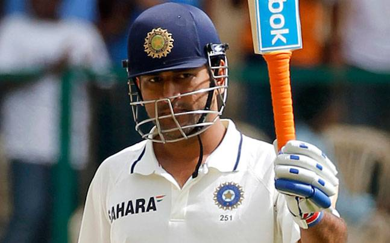

🏏 రిషభ్ పంత్ చరిత్ర సృష్టించాడు.. విదేశీ టెస్టుల్లో ధోనీ రికార్డు బద్దలు!

భారత క్రికెట్లో వికెట్కీపర్ బ్యాటర్గా తనకంటూ ప్రత్యేక గుర్తింపు తెచ్చుకున్న రిషభ్ పంత్ మరోసారి చరిత్ర సృష్టించాడు. శ్రీలంకతో జరుగుతున్న రెండో టెస్టులో పంత్ మాజీ కెప్టెన్, దిగ్గజ వికెట్కీపర్ బ్యాటర్ మహేంద్ర సింగ్ ధోనీ రికార్డును అధిగమించాడు. విదేశీ లేదా తటస్థ వేదికల్లో భారత వికెట్కీపర్గా అత్యధిక టెస్ట్ పరుగులు చేసిన ఆటగాడిగా పంత్ నిలిచాడు.
కొలంబోలోని ఎస్ఎస్సీ మైదానంలో శ్రీలంకతో జరిగిన రెండో టెస్టు సందర్భంగా పంత్ ఈ ఘనత సాధించాడు. ఈ మ్యాచ్లో పంత్ 89 బంతుల్లో 63 పరుగులు చేశాడు. ఈ ఇన్నింగ్స్తో అతని విదేశీ, తటస్థ వేదికల టెస్ట్ పరుగుల సంఖ్య 2,500 మార్క్ను దాటింది. పంత్ 2,501 పరుగులకు చేరుకోగా, ధోనీ పేరిట ఉన్న 2,496 పరుగుల రికార్డును అధిగమించాడు.
ఇది పంత్ కెరీర్లో మరో కీలక మైలురాయిగా నిలిచింది. ఎందుకంటే విదేశీ పరిస్థితుల్లో బ్యాటింగ్ చేయడం సాధారణంగా అంత సులభం కాదు. పిచ్ పరిస్థితులు, వాతావరణం, బౌలర్లకు లభించే సహకారం వంటి అంశాలు బ్యాటర్లకు సవాల్గా ఉంటాయి. అలాంటి పరిస్థితుల్లో వికెట్కీపర్గా బాధ్యతలు నిర్వర్తిస్తూ భారీగా పరుగులు సాధించడం పంత్ ప్రత్యేకతను చూపిస్తోంది.

మహేంద్ర సింగ్ ధోనీ భారత క్రికెట్లో అత్యంత విజయవంతమైన వికెట్కీపర్ బ్యాటర్లలో ఒకరు. కెప్టెన్గా భారత్కు ఎన్నో విజయాలు అందించిన ధోనీ, టెస్ట్ క్రికెట్లో కూడా కీలక ఇన్నింగ్స్లు ఆడాడు. విదేశీ టెస్టుల్లో వికెట్కీపర్గా అతని పరుగుల రికార్డు చాలా కాలం కొనసాగింది. ఇప్పుడు ఆ రికార్డును రిషభ్ పంత్ అధిగమించడం భారత క్రికెట్ అభిమానుల్లో చర్చనీయాంశంగా మారింది.
పంత్ ప్రయాణాన్ని చూస్తే ఈ రికార్డు మరింత ప్రత్యేకంగా కనిపిస్తుంది. తన దూకుడైన బ్యాటింగ్తో అంతర్జాతీయ క్రికెట్లో ప్రత్యేక గుర్తింపు తెచ్చుకున్న పంత్, ముఖ్యంగా టెస్ట్ క్రికెట్లో మ్యాచ్ పరిస్థితులను మార్చగల బ్యాటర్గా పేరు సంపాదించాడు. ప్రత్యర్థి బౌలర్లపై ఒత్తిడి పెంచే విధంగా షాట్లు ఆడటం, అవసరమైన సమయంలో వేగంగా పరుగులు చేయడం అతని బ్యాటింగ్లో ప్రధాన లక్షణాలు.
శ్రీలంకతో రెండో టెస్టులో కూడా పంత్ తన దూకుడైన ఆటతీరును చూపించాడు. 63 పరుగుల ఇన్నింగ్స్తో భారత్ స్కోరును భారీ స్థాయికి తీసుకెళ్లడంలో తన వంతు పాత్ర పోషించాడు. అదే సమయంలో అతని ఈ ఇన్నింగ్స్ రికార్డు పుస్తకాల్లో కూడా చోటు సంపాదించింది.
పంత్కు ఇదే మ్యాచ్లో మరో ముఖ్యమైన రికార్డు కూడా నమోదైంది. టెస్ట్ క్రికెట్లో అత్యధిక సిక్సర్లు కొట్టిన ఆటగాళ్ల జాబితాలో కూడా అతను ఆస్ట్రేలియా దిగ్గజ వికెట్కీపర్ ఆడమ్ గిల్క్రిస్ట్ను అధిగమించాడు. పంత్ టెస్ట్ కెరీర్లో 100 సిక్సర్ల మార్క్ను కూడా చేరుకున్నాడు.
గిల్క్రిస్ట్, ధోనీ, పంత్ వంటి వికెట్కీపర్ బ్యాటర్లు టెస్ట్ క్రికెట్లో దూకుడైన బ్యాటింగ్కు ప్రత్యేక గుర్తింపు తెచ్చుకున్నారు. అయితే పంత్ తనదైన శైలిలో ఈ జాబితాలో ముందుకు సాగుతున్నాడు. వికెట్కీపింగ్తో పాటు బ్యాటింగ్లో కూడా జట్టుకు కీలకమైన పరుగులు అందించడం అతని ప్రధాన బలం.
పంత్ కెరీర్లో ఎన్నో సవాళ్లు కూడా ఉన్నాయి. గాయాల కారణంగా అతను క్రికెట్కు దూరమైన సందర్భాలు ఉన్నాయి. అయినప్పటికీ తిరిగి అంతర్జాతీయ క్రికెట్లోకి వచ్చి తన స్థాయిని నిరూపించుకున్నాడు. ప్రతి మ్యాచ్తో తన ఆటను మెరుగుపరుచుకుంటూ భారత టెస్ట్ జట్టులో కీలక ఆటగాడిగా కొనసాగుతున్నాడు.
మరోవైపు, ఈ రికార్డును ధోనీతో పోల్చడం సహజమే అయినప్పటికీ ఇద్దరి కెరీర్లను నేరుగా పోల్చడం అంత సులభం కాదు. ధోనీ ఒక తరం భారత క్రికెట్కు నాయకత్వం వహించిన ఆటగాడు కాగా, పంత్ ప్రస్తుతం భారత టెస్ట్ జట్టులో తనదైన పాత్రను నిర్మించుకుంటున్నాడు. ఇద్దరి ఆటతీరు, కెరీర్ పరిస్థితులు, ఆడిన మ్యాచ్ల సంఖ్య భిన్నంగా ఉన్నాయి.
అయితే ఒక విషయం మాత్రం స్పష్టంగా కనిపిస్తోంది. భారత క్రికెట్లో వికెట్కీపర్ బ్యాటర్ల పాత్రను పంత్ మరింత ఉన్నత స్థాయికి తీసుకెళ్తున్నాడు. విదేశీ టెస్టుల్లో ధోనీ రికార్డును అధిగమించడం అందుకు మరో ఉదాహరణ.
ఇక ఈ రికార్డు తర్వాత పంత్పై అంచనాలు మరింత పెరగనున్నాయి. రాబోయే టెస్ట్ సిరీస్లలో అతను మరిన్ని పరుగులు సాధిస్తే, ఈ రికార్డును మరింత ముందుకు తీసుకెళ్లే అవకాశం ఉంది. ముఖ్యంగా విదేశీ పరిస్థితుల్లో అతని బ్యాటింగ్ భారత జట్టుకు ఎంతో కీలకం.
మొత్తంగా చూస్తే, కొలంబోలో రిషభ్ పంత్ ఆడిన 63 పరుగుల ఇన్నింగ్స్ కేవలం మరో స్కోర్ మాత్రమే కాదు. అది భారత వికెట్కీపర్ బ్యాటర్ల చరిత్రలో ఒక ముఖ్యమైన మైలురాయిగా నిలిచింది. 2,501 విదేశీ/తటస్థ టెస్ట్ పరుగులతో పంత్, 2,496 పరుగుల ధోనీ రికార్డును అధిగమించాడు. దీంతో భారత క్రికెట్లో పంత్ మరోసారి తన పేరును రికార్డు పుస్తకాల్లో లిఖించుకున్నాడు.
#RishabhPant #RishabhPantVsDhoni #MSDhoni
← హోమ్ పేజీకి వెళ్లండి